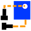

ExplodedAssembly Workbench/fr
{kind=link}

Introduction
L' atelier ExplodedAssembly est un atelier externe permettant de créer des vues éclatées et des animations d'assemblages.
Fonctions
- Crée de beaux éclatés d'assemblages graphiquement (pas de code du tout!)
- Crée des groupes sous-éclatés
- Donne une rotation aux vis et aux écrous pour des démontages réalistes
- Utilise les outils d'assemblage auxiliaires fournis pour placer vos pièces ensemble
- Fonction A FAIRE: créer une trajectoire à partir de polylignes et d'esquisses
Références
- Auteur : JMG1
- Page d'accueil : ExplodedAssembly
- Code source sur github : ExplodedAssembly
Outils
{kind=link}
Barre d'outils
{kind=link}
Menu
Outils standards
- Créer un groupe de boulons
- Créer un groupe simple
- Modifier la trajectoire d'un objet individuel
- Placer avant
- Exploser vers la sélection
- Assembler
- Jouer à l'envers
- Arrêter l'animation
- Lire en avant
- Désassembler
- Visibilité de la trajectoire
- Alignement sur le bord
- Rotation de 90
- Pointer vers le point
- Placer de façon concentrique
{kind=link}
{kind=link}
{kind=link}
{kind=link}
{kind=link}
{kind=link}
{kind=link}
{kind=link}
{kind=link}
{kind=link}
{kind=link}
{kind=link}
{kind=link}
{kind=link}
{kind=link}
Outils supplémentaires
Ces outils peuvent être ajoutés à une barre d'outils personnalisée. Voir Personnalisation de l'interface.
- Bord de la caméra d'animation
- Suivi de la caméra d'animation
- Manuel de la caméra d'animation
- Trajectoire de la ligne
{kind=link}
{kind=link}
{kind=link}
{kind=link}
Installation
Installation automatique
Cet atelier peut être installé à partir du Gestionnaire des extensions.
Depuis GitHub
Utilisation de git sur Ubuntu et Mint :
- Ouvrez l'invite de commande (terminal) avec les touches Ctrl+Alt+t
- Installez git :
sudo apt-get install git - Cloner le dépôt :
git clone https://github.com/JMG1/ExplodedAssembly ~/.FreeCAD/Mod/ExplodedAssembly
C'est tout, la prochaine fois que vous lancerez FreeCAD, l'atelier devrait être disponible.
Pour installer manuellement, téléchargez ce dépôt en ZIP et :
- Pour Ubuntu, Mint et les OS similaires, extrayez-le à l'intérieur de : /home/username/.local/share/FreeCAD/Mod (version 0.20 et suivantes) ou /home/username/.FreeCAD/Mod (version 0.19 et précédentes)
- Pour Windows, extrayez-le à l'intérieur de : C:\Users\votre_nom_d'utilisateur\AppData\Roaming\FreeCAD\Mod.
Liens vers l'atelier ExplodedAssembly
- Forum FreeCAD : https://forum.freecad.org/viewtopic.php?f=24&t=9028
- Vidéos : [1] [2]
- Fichiers : à l'intérieur de l'atelier
- Signaler les bogues : merci de signaler les bogues sur https://github.com/JMG1/ExplodedAssembly/issues
Autres liens intéressants
- Démarrer avec FreeCAD
- Installation : Téléchargements, Windows, Linux, Mac, Logiciels supplémentaires, Docker, AppImage, Ubuntu Snap
- Bases : À propos de FreeCAD, Interface, Navigation par la souris, Méthodes de sélection, Objet name, Préférences, Ateliers, Structure du document, Propriétés, Contribuer à FreeCAD, Faire un don
- Aide : Tutoriels, Tutoriels vidéo
- Ateliers : Std Base, Assembly, BIM, CAM, Draft, FEM, Inspection, Material, Mesh, OpenSCAD, Part, PartDesign, Points, Reverse Engineering, Robot, Sketcher, Spreadsheet, Surface, TechDraw, Test